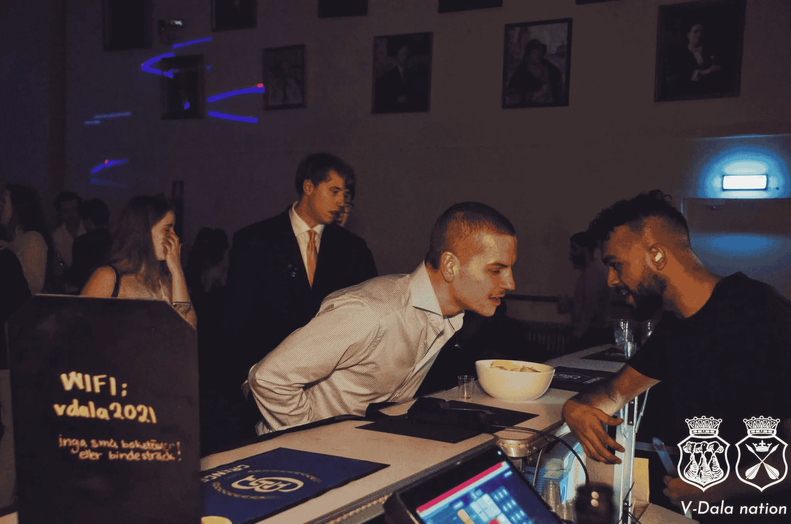
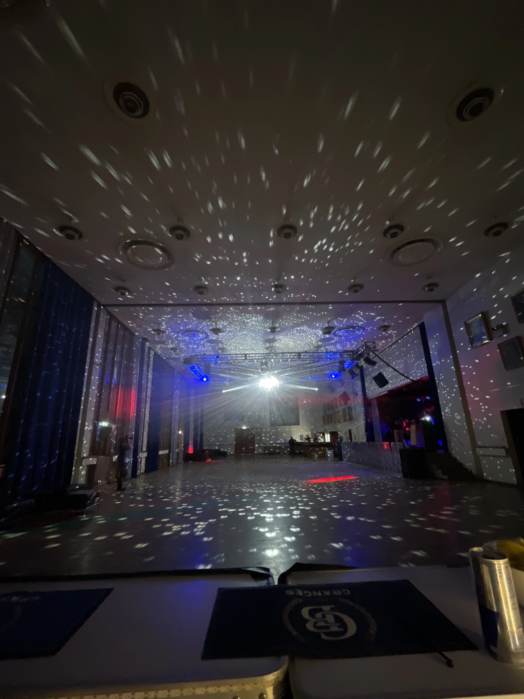
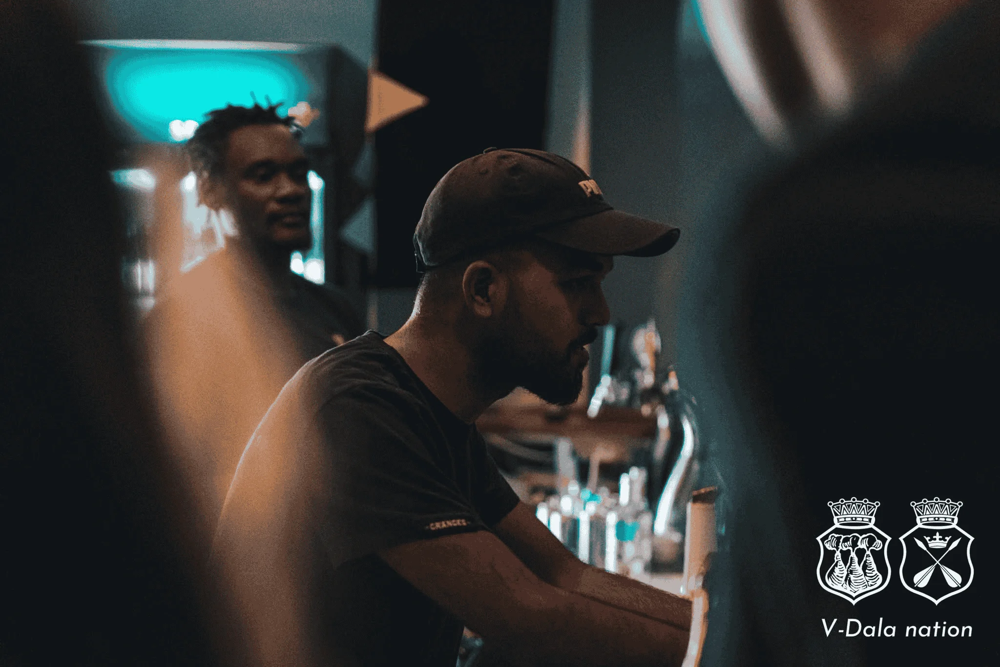
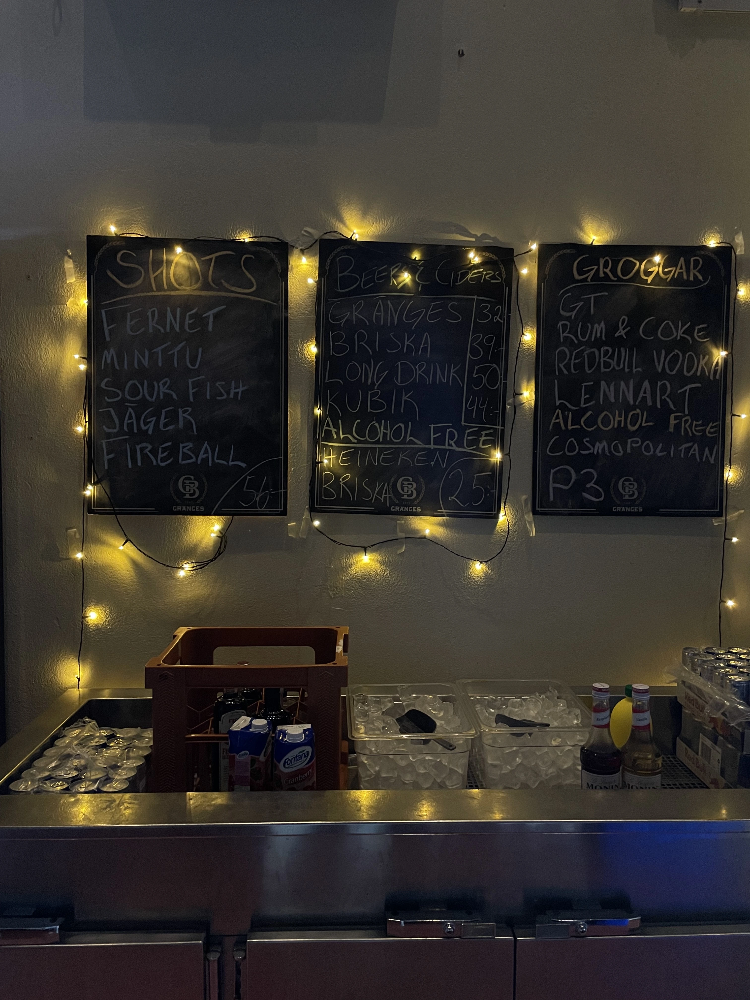
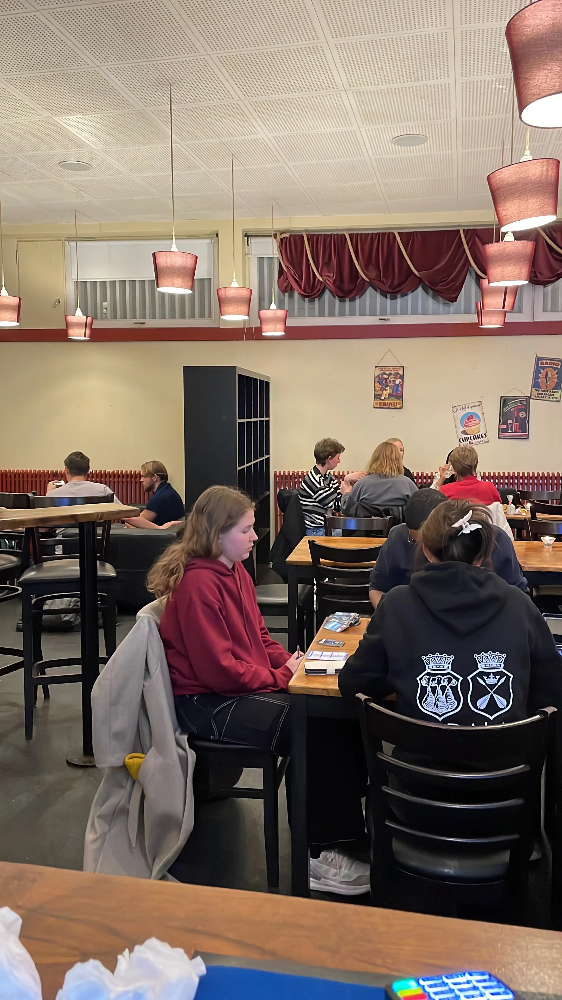
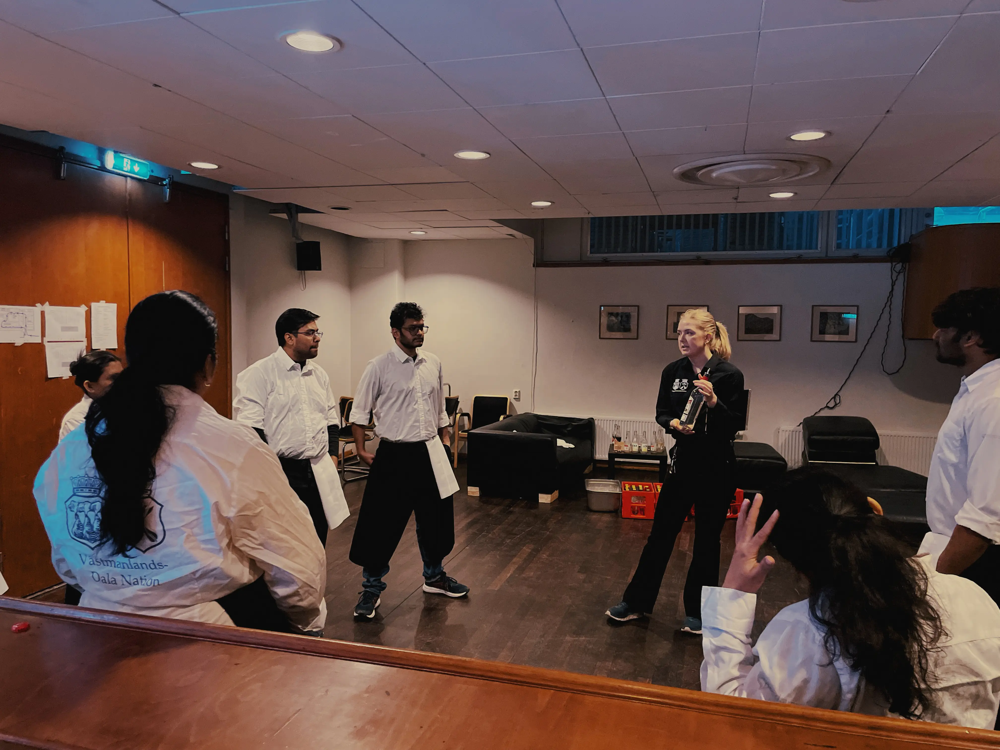

Västmanlands Dalarna Nation
Uppsala’s student life is defined by its Nations. They are historic, student-run collectives that act as the social and cultural anchors of the university city. Among them is Västmanlands-Dala, or simply V-Dala. Housed in a white modernist building called ’The White Castle’, designed by the Finnish architect Alvar Aalto, it stands as both a physical and social landmark. But beyond its sweeping concrete geometry, V-Dala is a living, breathing community. For my two years living in Uppsala, this collective was the definitive center of my world.

A Foriegn Land
Arriving in a foreign country was quite a disorienting experience. The geography was unfamiliar, the Swedish winters were relentlessly dark, and the initial isolation carried a heavy weight. Before I could understand the rhythm of the new city, I was simply floating through it, disconnected from the local tapestry. I realized very early on that to survive the long winters and to truly make Uppsala feel like home. I needed to find an anchor. I needed a space to belong to.


Working the Bar
Besides serving as communal spaces for students to gather, the nations provided part-time roles within their internal pubs and clubs. I found my anchor behind the bar at V-Dala. Bartending was an inherently mechanical task with a fast-paced rhythm of pouring, mixing, and serving amidst the chaos of a weekend shift. It was through working that bar that I found my place within a community of incredibly diverse, fun-minded students from all walks of life.



A Third Space
V-Dala quickly became my definitive "third space". It was an environment entirely separate from the academic pressure of the university and the isolation of a student apartment. Inside the white walls of the castle, the modern demand to constantly perform and produce vanished. No doubt, there were nights where we were overworked to the point of exhaustion. But, somehow the belief that we were creating something fun for others and ourselves, held us all together. It was a a shared space built over literally centuries of students gathering together to make something happen. The quite and the loud traditions of the nation, made us feel part of something bigger, something historical, something to remember forever and to be remembered. Experiencing V-Dala taught me exactly how crucial these dedicated enviroments are for our well-being, they are the architectural foundations of community.

Humans of Uppsala
By design, a Nation acts as a crossroad for peopls, ideas and activities, and V-Dala was a brilliant one. I worked alongside people from all over the globe and Sweden, as well as locals from Uppsala. Most of them were undeniably funny, and full of love. They were the ones who truly transformed a cold, foreign city into a place of warmth. The hours spent working the bar, laughing during Sexas, and simply existing with them, even beyond V-Dala, formed the absolute core of my Uppsla archive.

